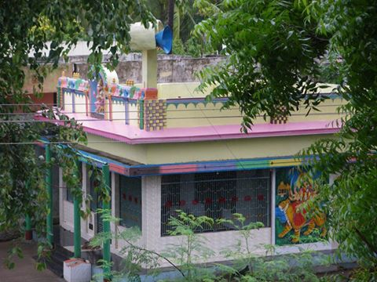
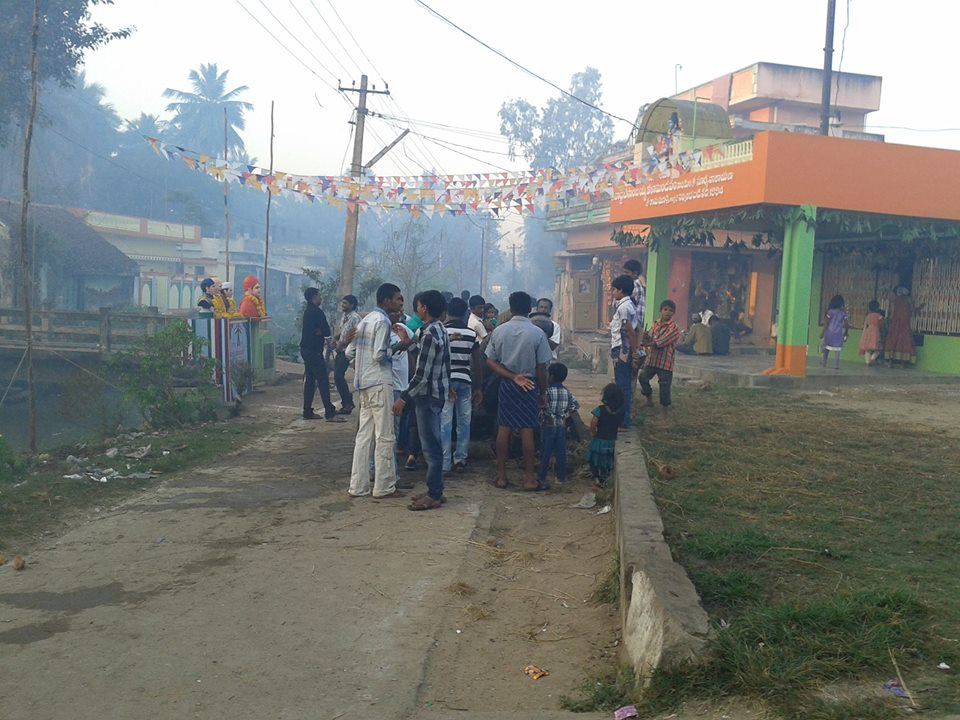
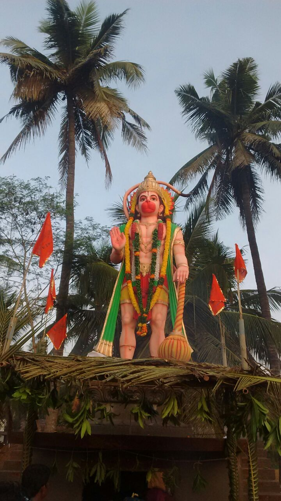
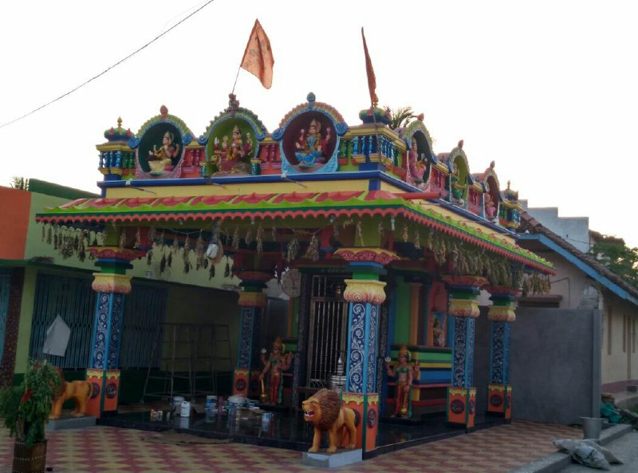
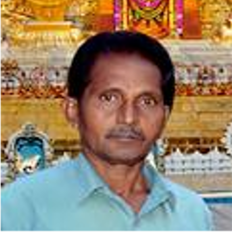

Lakshminarayanapuram is a Village in Attili Mandal in West Godavari District of Andhra Pradesh State, India. It belongs to Andhra region . It is located 61 KM towards East from District head quarters Eluru. 11 KM from Attili. 10KM from Bhimavaram. 185 KM via NH16 from State capital Amaravathi. Lakshminarayanapuram Pin code is 534209. Latitude: 16°35'48.1"N Longitude: 81°35'24.6"E

SRI VIGNESWARA TEMPLE- LAKSHMINARAYANA PURAM.

SRI GOWRI-SANKARA TEAMPLE - LAKSHMINARAYANAPURAM.

SRI ANJANEYA SWAMY TEMPLE - LAKSHMINARAYANA PURAM.

SRI DURGA DEVI TEMPLE - LAKSHMINARAYANA PURAM.
Netaji Employee Union President - Sri Pandu Rangarao Garu.
Netaji Employee Union Founder - Sri Polamarasetti Mohan Rao Garu.

MPTC - Sri Polamarasetti Appala Raju Garu.

Panchayat President - Sri Polamarasetti Srinivasarao Garu.
- 
Sri Gowri Sankara Committe President - Sri Polamarasetti Dhana Rao Garu.

Sri Vigneswara Committe President - Sri Doddi Venkateswarao Garu.